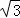
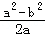
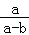
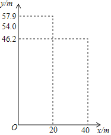
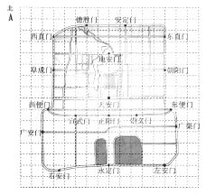

2018年北京市中考数学试题 · 选择题 第6、7、8题
6．（2.00分）如果a﹣b=2

，那么代数式（
﹣b）•
的值为（ ）A．B．2C．3D．4
7．（2.00分）跳台滑雪是冬季奥运会比赛项目之一，运动员起跳后的飞行路线可以看作是抛物线的一部分，运动员起跳后的竖直高度y（单位：m）与水平距离x（单位：m）近似满足函数关系y=ax2+bx+c（a≠0）．如图记录了某运动员起跳后的x与y的三组数据，根据上述函数模型和数据，可推断出该运动员起跳后飞行到最高点时，水平距离为（ ）

A．10mB．15mC．20mD．22.5m
8．（2.00分）如图是老北京城一些地点的分布示意图．在图中，分别以正东、正北方向为x轴、y轴的正方向建立平面直角坐标系，有如下四个结论：
①当表示天安门的点的坐标为（0，0），表示广安门的点的坐标为（﹣6，﹣3）时，表示左安门的点的坐标为（5，﹣6）；
②当表示天安门的点的坐标为（0，0），表示广安门的点的坐标为（﹣12，﹣6）时，表示左安门的点的坐标为（10，﹣12）；
③当表示天安门的点的坐标为（1，1），表示广安门的点的坐标为（﹣11，﹣5）时，表示左安门的点的坐标为（11，﹣11）；
④当表示天安门的点的坐标为（1.5，1.5），表示广安门的点的坐标为（﹣16.5，﹣7.5）时，表示左安门的点的坐标为（16.5，﹣16.5）．
上述结论中，所有正确结论的序号是（ ）

A．①②③B．②③④C．①④D．①②③④